Fun with Filters and Frequencies
Every operation here starts from the same primitive — 2D convolution — and builds up from there: finite-difference edges, derivative-of-Gaussian filters, unsharp masking, and finally hybrid images that swap identities depending on how far away you stand from the screen.
Convolutions from Scratch
Three implementations of the same zero-padded, kernel-flipped
“same” convolution — a naive four-nested-loop version,
a two-loop version that vectorizes over the kernel window, and
scipy.signal.convolve2d as ground truth — run on a
9×9 box filter and a pair of finite-difference kernels.
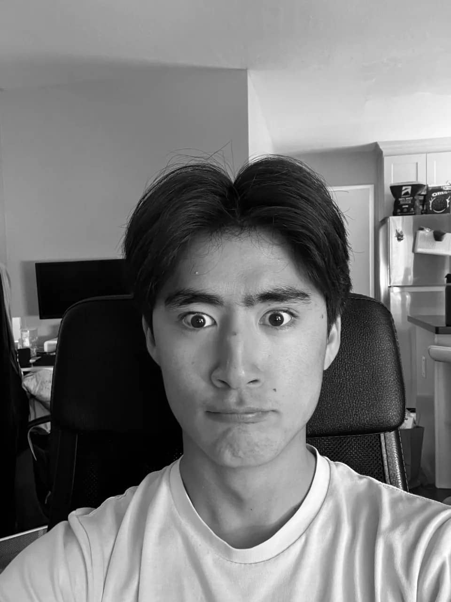
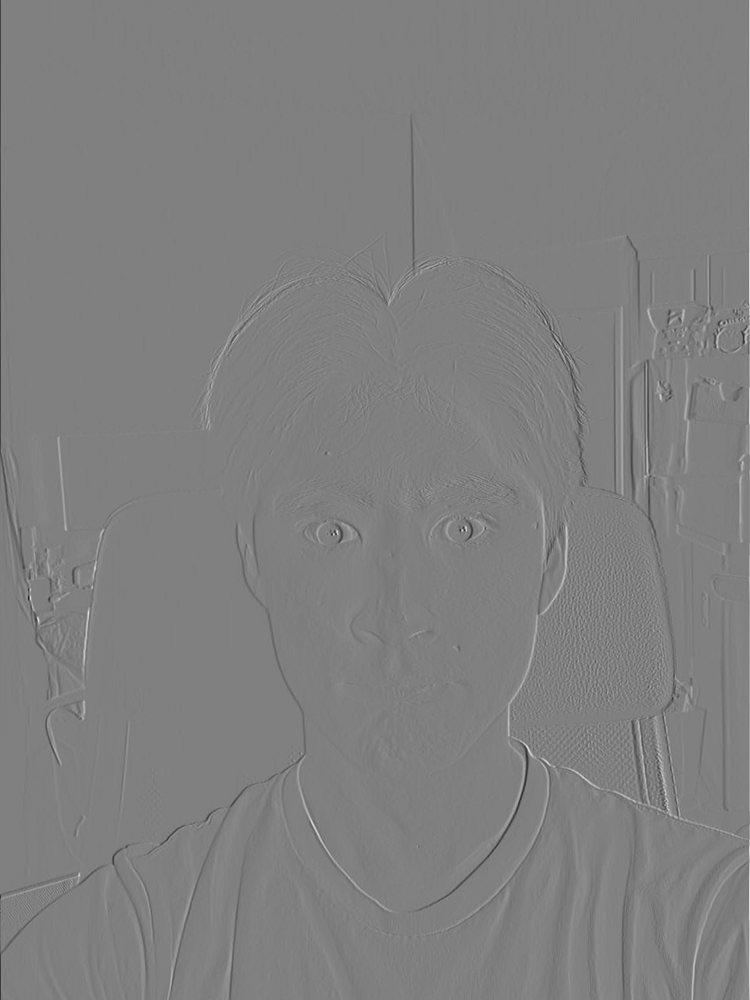
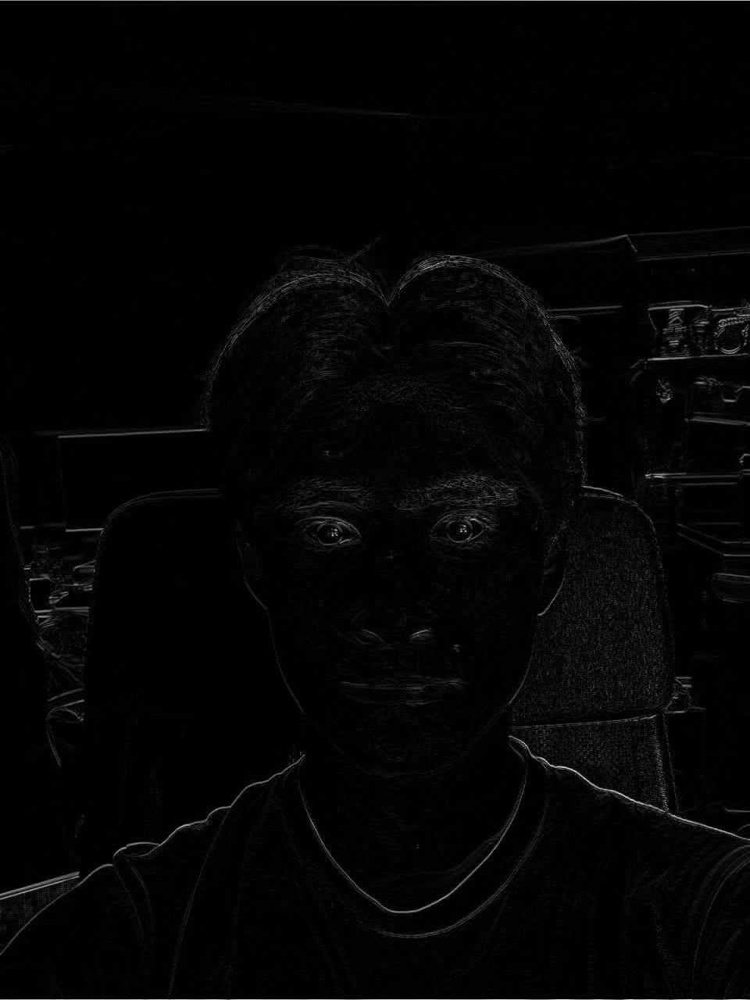
np.allclose confirms all three implementations agree
exactly. Measured wall-clock time for the 9×9 box filter on the
960×1280 selfie (1,228,800 pixels, 81 taps each):
- 4 nested loops: 68.4s
- 2 loops (vectorized kernel window): 9.6s — ~7× faster
- scipy.signal.convolve2d: 0.32s — ~210× faster than 4-loop
The four-loop version pays Python's per-operation overhead
H×W×kh×kw times —
almost 100 million individual scalar multiply-adds, each one a full
Python bytecode dispatch. Replacing the two innermost loops with a
single np.sum(region * kernel) moves that same work into
C, leaving only H×W Python-level iterations — a
~7× speedup for free. Scipy goes further still: convolve2d
is a single compiled call with no per-pixel Python round-trip at all,
so it's over two orders of magnitude faster than the naive loop.
All three use the same boundary convention — the image is
explicitly zero-padded by (k−1)/2 on each side
before sliding the kernel (np.pad with
constant_values=0 in the loop versions,
boundary='fill', fillvalue=0 in scipy) — which is
why they match pixel-for-pixel. Zero-padding treats everything
outside the frame as black, which pulls the blurred result darker
near the edges (visible as a faint vignette in the box-filtered
selfie above); a reflect or edge boundary
would avoid that darkening but no longer matches scipy's default
convention exactly.
Finite Difference Operator
Convolving the cameraman with the same [−1, 0, 1] finite-difference kernels gives partial derivatives in x and y; their magnitude locates edges, and thresholding turns that into a binary edge map.
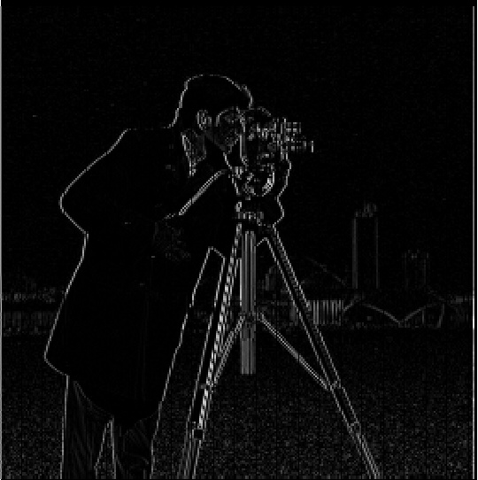
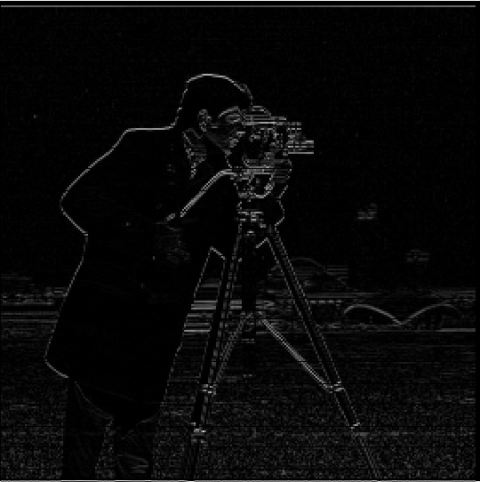
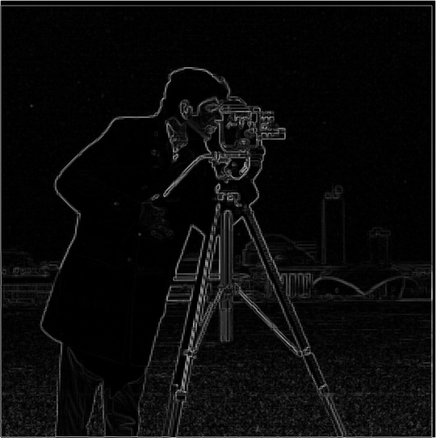
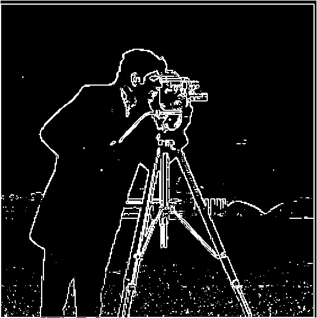
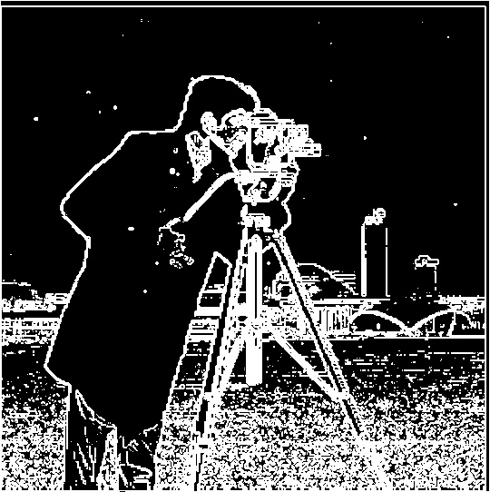
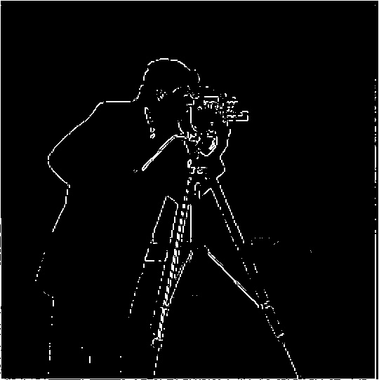
50/255 was chosen as the point that keeps the cameraman, camera, and tripod as continuous outlines while mostly suppressing the high-frequency noise in the grass. A raw finite difference has no notion of scale, so it responds just as strongly to one noisy pixel as to a true object boundary — there's no threshold that gets a perfectly clean silhouette and a noise-free background from this operator alone, only a tradeoff between the two, which Part 1.3's Gaussian pre-blur addresses directly.
Derivative of Gaussian (DoG) Filters
Blurring before differentiating suppresses exactly the high-frequency noise Part 1.2 struggled with. Convolution is associative, so blur-then-differentiate can be collapsed into a single derivative-of-Gaussian kernel — the Gaussian pre-convolved with each finite-difference kernel.
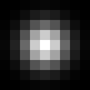
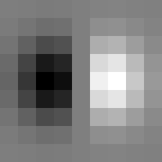
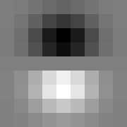
Left to right: the 9×9 Gaussian (σ=1.5), DoG/∂x, DoG/∂y — each upsampled with nearest-neighbor so individual taps are visible.
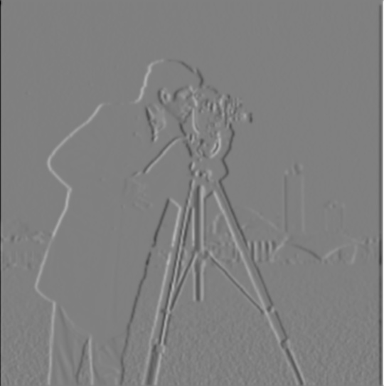
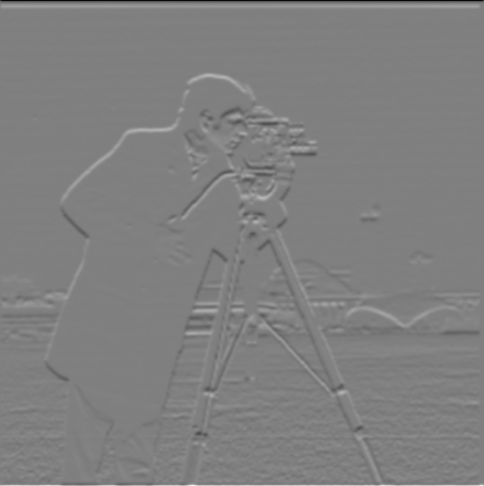
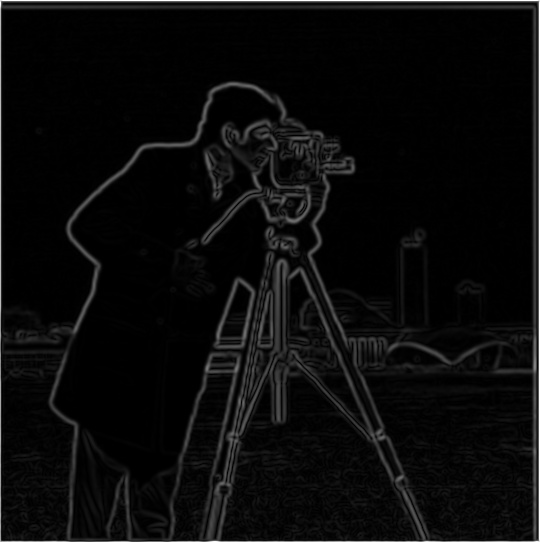
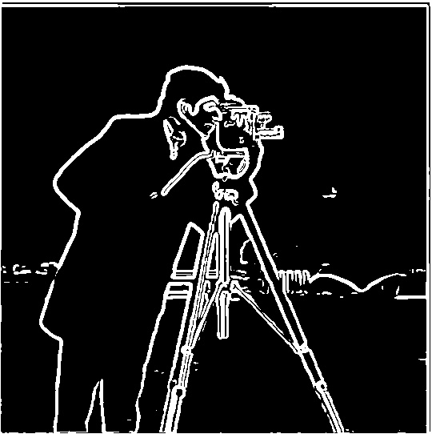
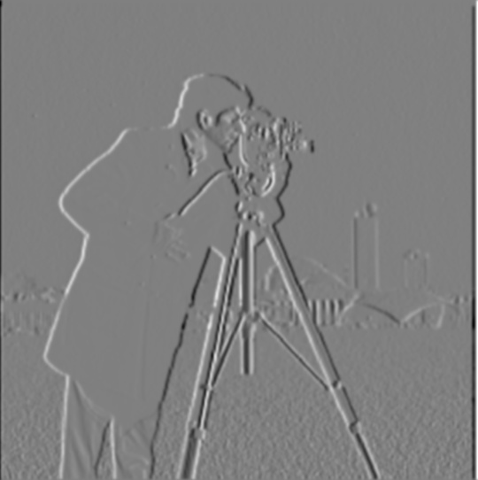
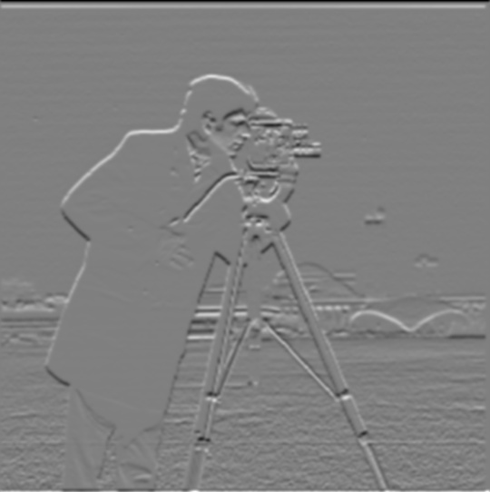
Compared to Part 1.2's raw finite differences, the blurred gradient magnitude is visibly cleaner — the grass no longer registers as a field of bright specks — which is why the binarized version here uses a lower threshold (25/255 vs. 50/255) and still comes out less noisy. Blurring trades edge sharpness for noise rejection: fine texture gets smoothed away along with the noise, but the object boundaries that survive are more reliable.
Convolving with the single DoG kernel and convolving with the
Gaussian then the difference kernel agree almost everywhere —
interior pixels differ by at most ~0.007 (on a [0,1] scale). They're
not bit-identical only at the border: two sequential
'same'-mode, zero-padded convolutions each introduce
their own edge padding, which isn't quite the same as one
'same'-mode convolution with the composed kernel, so the
outermost few pixels disagree by up to 0.37. Everywhere convolution's
associativity actually applies — away from the border —
the two routes to the same DoG filter land on the same answer.
Gradient Orientation, Without arctan2
Instead of calling an inverse-trig “angle” function like
np.arctan2 or cv2.phase directly on
(∂x, ∂y), each pixel's gradient direction is classified by
nearest match: build a table of 360 reference unit vectors
from cos/sin of known angles (forward
trig, not angle recovery), normalize every pixel's (∂x, ∂y)
to a unit vector, and take the reference angle whose dot product
with it is largest. No inverse-trig call ever touches the gradient
itself — the angle comes out as an index into a lookup table.
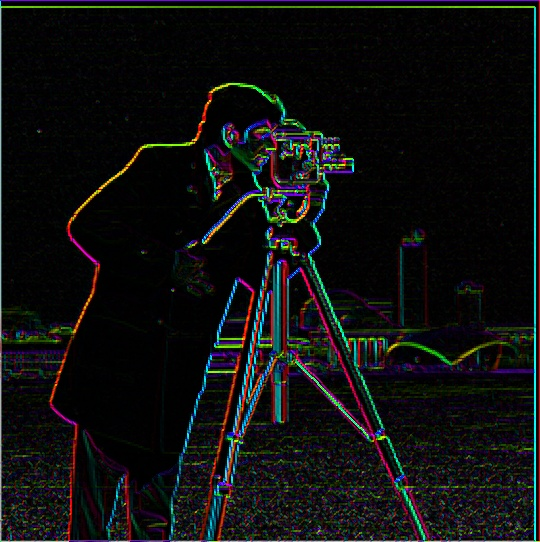
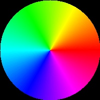
Image “Sharpening”
Unsharp masking boosts high frequencies by subtracting a blurred copy
from the original to isolate the high-frequency residual, then adding
a scaled copy of that residual back on top: a single convolution with
(1 + a)·impulse − a·gaussian.

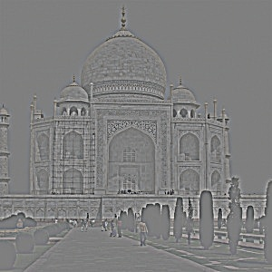
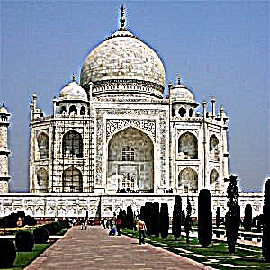
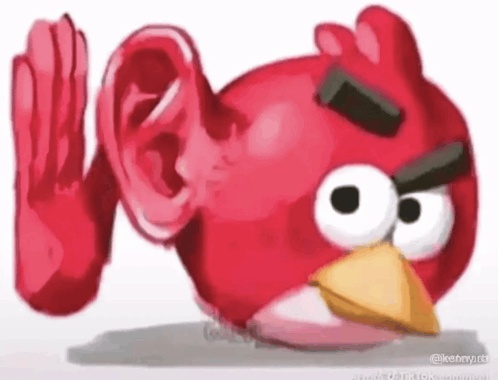
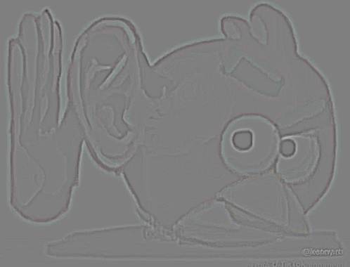
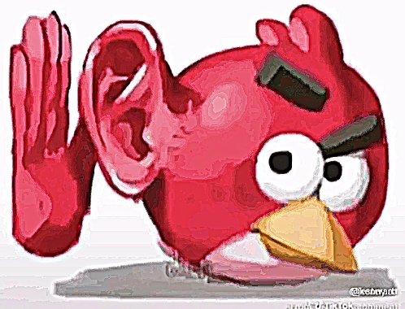
Red was picked as the second image because it's flat, saturated cartoon color instead of a photograph — almost all of its “edges” are hard boundaries between two solid colors, which makes unsharp masking's halo/ringing behavior much easier to see than on a photographic source like the Taj Mahal.
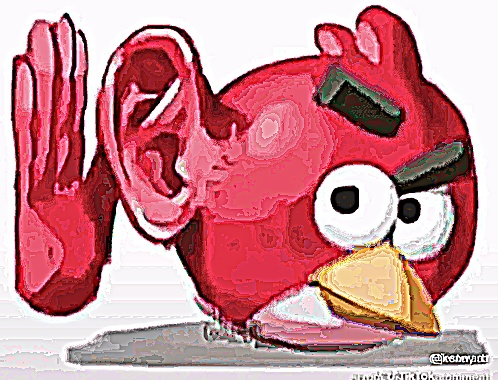
The blurred copy keeps only an image's low frequencies; subtracting
it from the original leaves just the high-frequency residual —
edges, texture, noise. Unsharp masking adds a extra
copies of that residual back onto the original, so edges get a
brighter bright side and a darker dark side without touching the
smooth regions the residual is near-zero in. As a grows
the effect stops looking like sharpening and starts looking like
edge ringing — visible as a bright/dark halo tracing every
flat-color boundary on Red (the black eyebrows, the beak, the ear)
by a=10, since the filter is boosting a band of
frequencies, not literally adding resolution that was never
captured.
Hybrid Images
A hybrid image low-pass filters one aligned photo and high-pass filters another, then sums them: up close the high frequencies (fine detail, edges) dominate perception, but squint or step back and the low frequencies (coarse shape) take over instead. Alignment (center, scale, rotation) comes from two corresponding points picked in each image — here, both eyes.
Derek + Nutmeg — full process
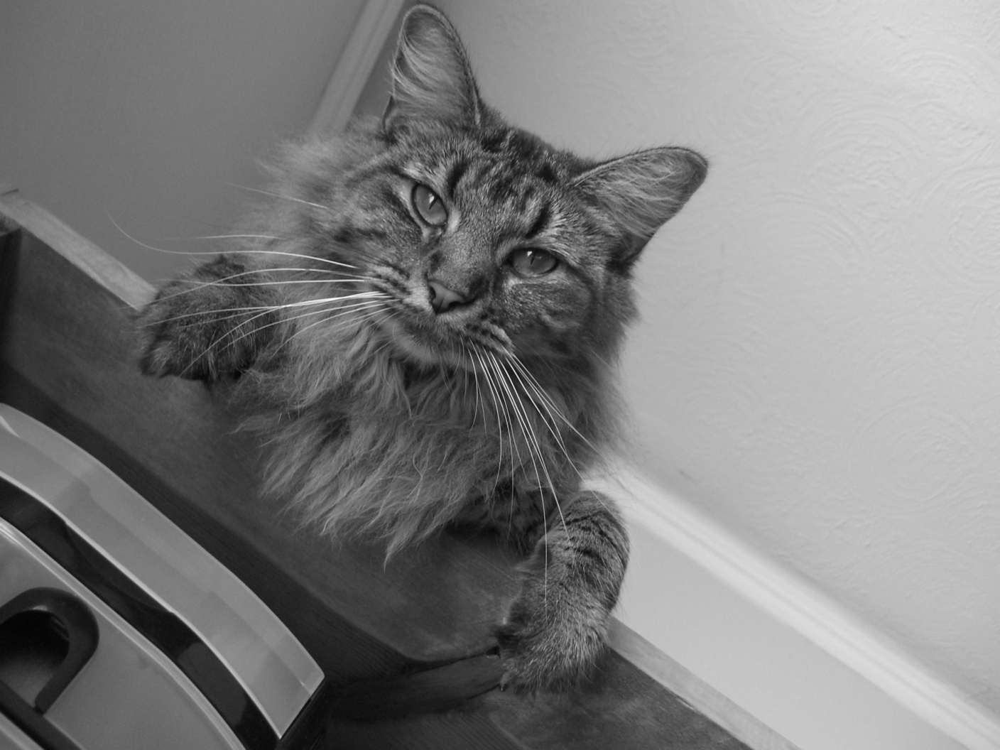
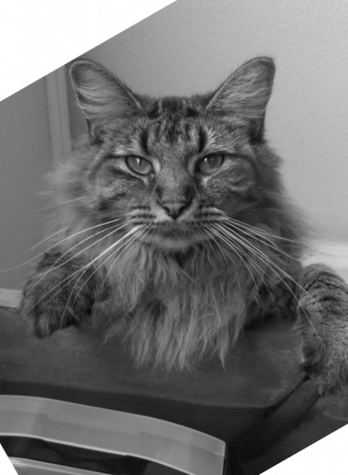
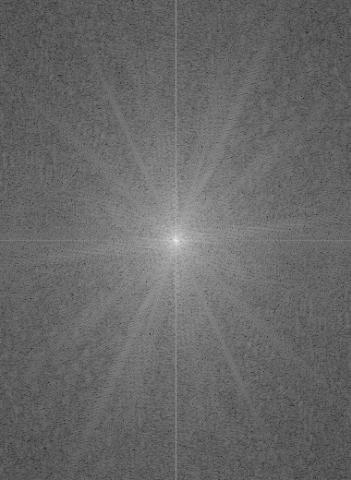
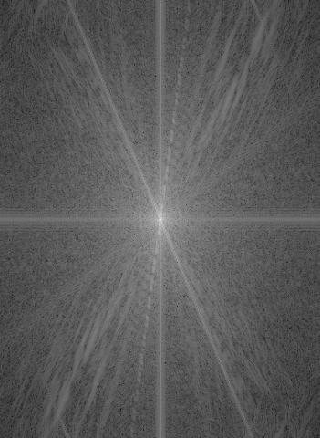
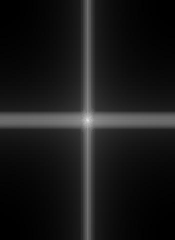
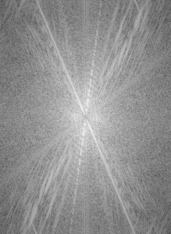
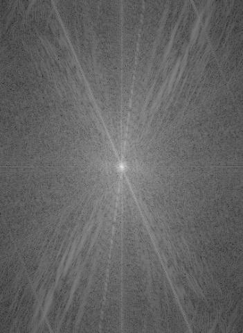
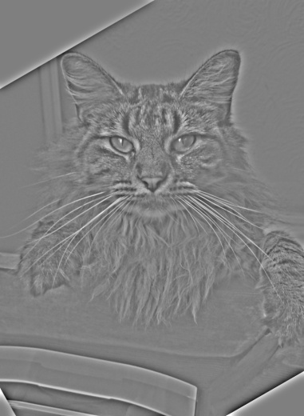
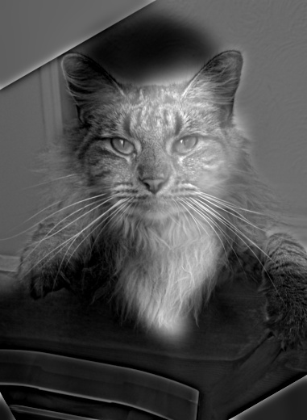
Cutoff frequencies (σlow=10 for Derek, σhigh=5
for Nutmeg, working at a common ~520px-tall resolution) were chosen
by trial and error against the strength of the illusion: too low a
σ on Derek and his sharp facial edges compete with Nutmeg's for
attention up close; too high a σ on Nutmeg's high-pass and its
residual gets so faint the fine cat detail disappears even at close
range. Unlike the notebook's fixed 9-tap kernel, this kernel's size
scales with σ (the same 2·ceil(3σ)+1
rule used for the Gaussian/Laplacian stacks later in the notebook),
since a fixed 9×9 kernel can't actually deliver a σ=10
blur — it just gets truncated. The FFT spectra confirm the
intent: Derek's low-passed spectrum concentrates energy near the
origin (low frequencies), Nutmeg's high-passed spectrum is hollowed
out at the center, and the hybrid's spectrum is essentially their
sum.
Speed + Speed Smile
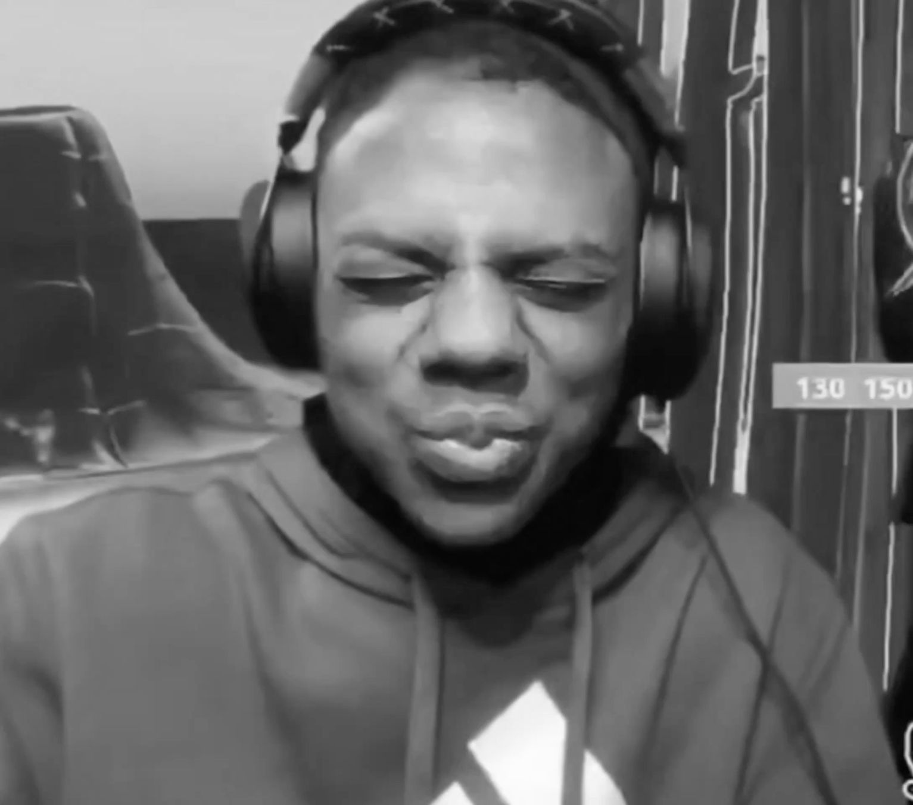
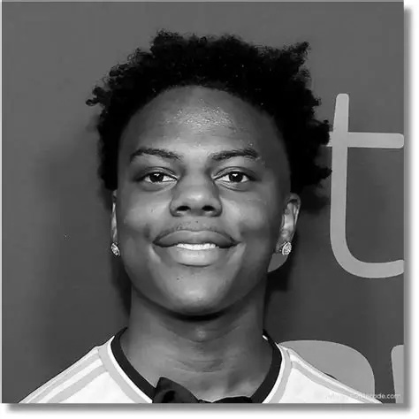
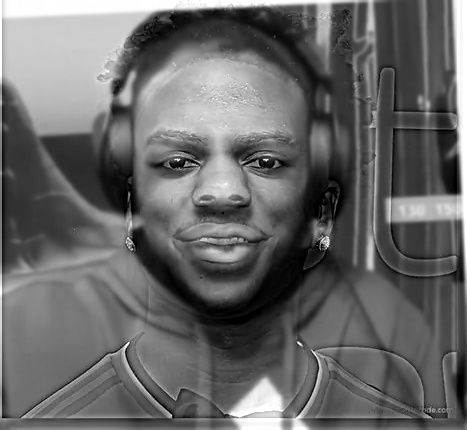
Landscape + Josh
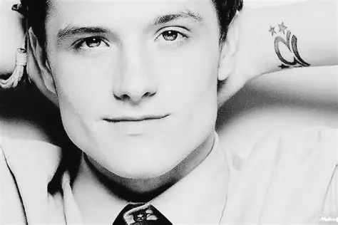
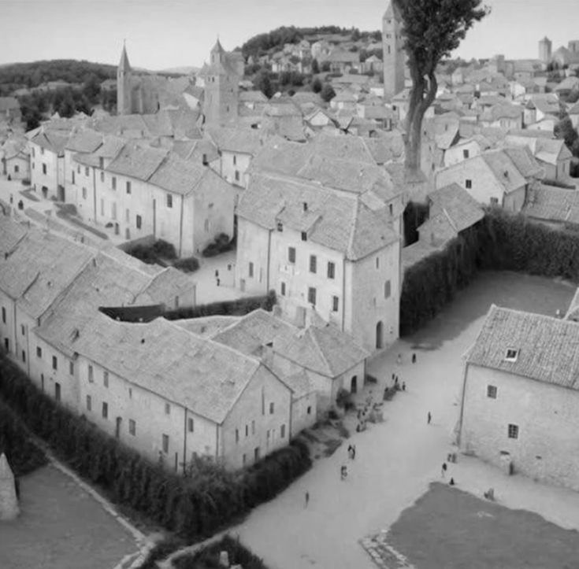
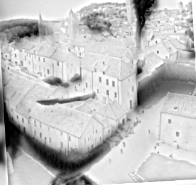